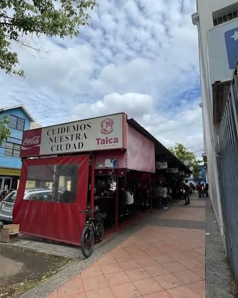
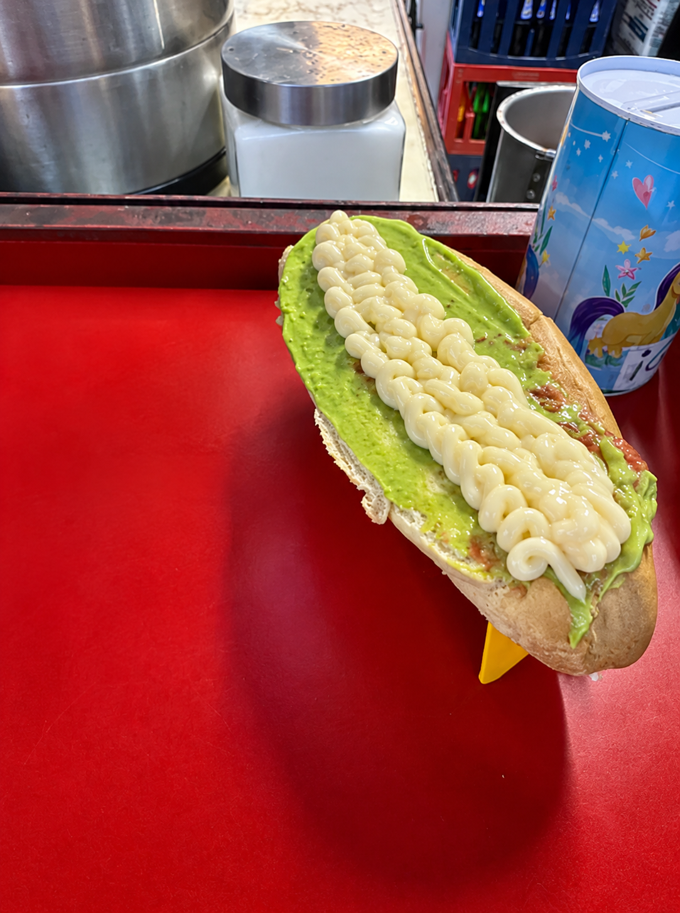
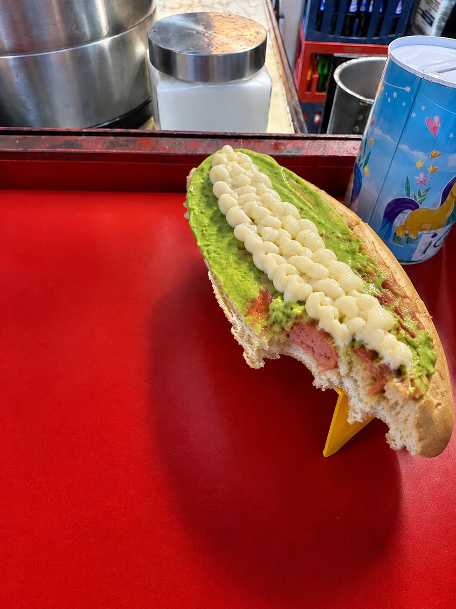

Este proyecto es sobre un vocabulario en inglés que se encuentra en películas, programación y una reseña de comida:
Rating: ⭐⭐⭐⭐⭐⭐⭐⭐⭐⭐
Hello! My name is Francisco, and today I am going to review an Italian completo. On Friday, September 25th, I went to eat completos at the famous food carts after leaving my school at 2:00 p.m. The place was a little crowded, so I went to the last cart, which is the best cart. My amazing English teacher recommended it to me, and I had to wait for my turn. When it was my turn, I ordered a good Italian completo. It looked really delicious, and honestly, I was very hungry at that moment. It had a lot of avocado and mayonnaise. The completo was hot and smelled really good. The bread was very tasty, and the combination of all the ingredients was amazing. I really liked the completo because it was filling and delicious. The avocado gave it a creamy texture, and the mayonnaise added more flavor. The portion was also good, so I was satisfied after eating it. Overall, I had a great experience at the food cart. Even though I had to wait for a while, those 2,300 Chilean pesos were worth it for that completo.


